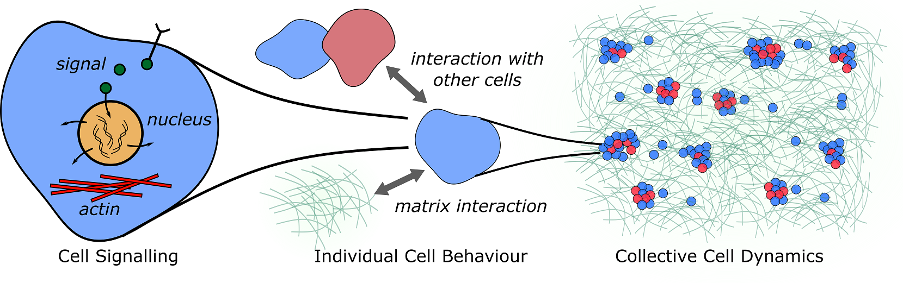
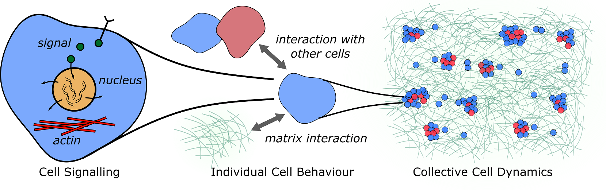
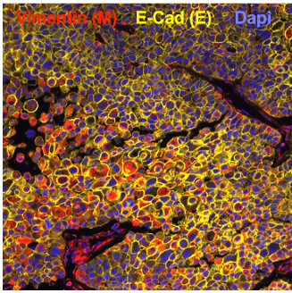
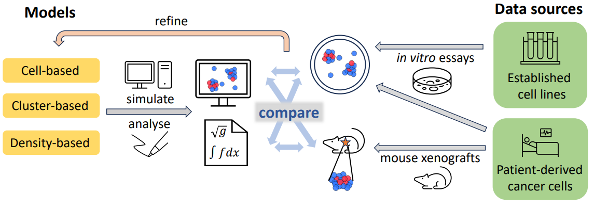

Modelling heterogeneous cell clusters and their environment


What is the project about?
What happens when cells move as a group? Why are cancer cell clusters more successful at metastasizing than single cells? This interdisciplinary project investigates the science of cell coordination. We combine mathematical modeling and simulation with experiments to explore how cell properties, their environment, and cell–cell communication shape collective behavior. While relevant to processes like development and wound healing, we focus on cancer spread using cells from breast cancer patients.
What are the guiding questions?
- How do cells self-organise into clusters and what influences cluster formation and behaviour?
- What are the differences/benefits of moving as a cluster compared to moving as single cells?
Mathematical Methods
- Interacting particle models
- Differential equations models (ODEs and PDEs)
- Numerical simulations
- Data analysis
|  |
Experimental part
Led by Juliane Winkler, Medical University of Vienna, Expert in Tumor Heterogeneity and Metastasis. Using breast cancer cells and established cell lines, we will test how cell state and the matrix conditions affect cell group properties. Additionally we will test the metastic potential of different conditions. |
